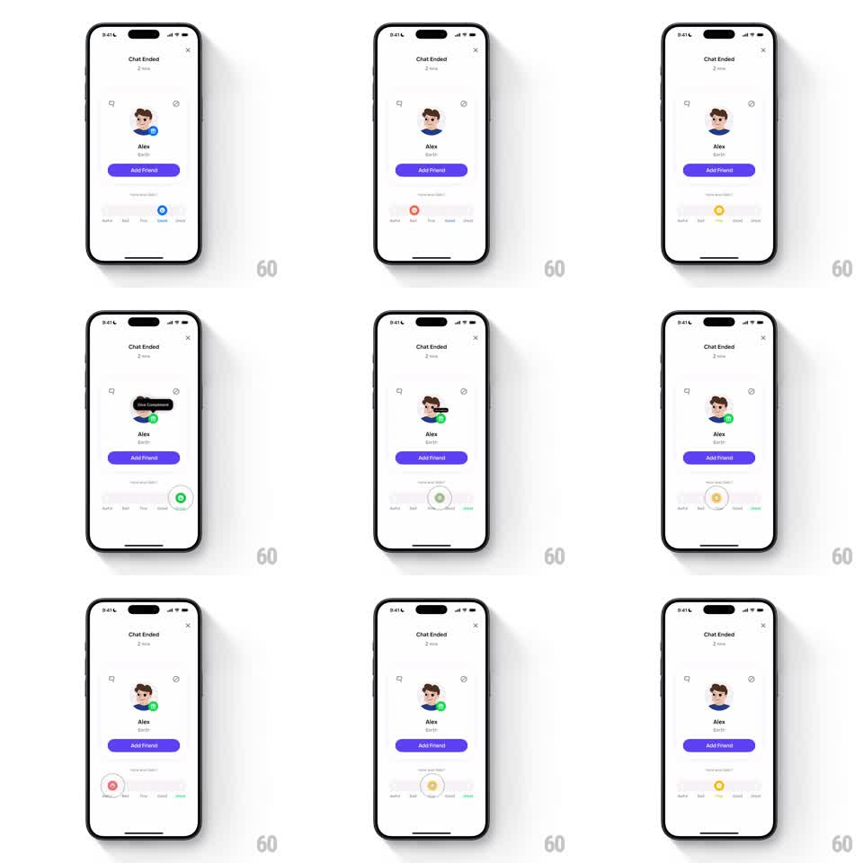

Media
Frame-by-frame

Rebuild this interaction 1:1: Honk's end-of-chat feedback slider - on the "Chat Ended" screen, dragging the rating knob across Awful-to-Great recolors it, fills the track, updates the labels, and stamps a feedback badge onto the friend's profile.

Rebuild this interaction 1:1: Honk's end-of-chat feedback slider - on the "Chat Ended" screen, dragging the rating knob across Awful-to-Great recolors it, fills the track, updates the labels, and stamps a feedback badge onto the friend's profile.
## Integration
Integration: stack-agnostic spec - springs given as stiffness/damping, timed motions as duration + curve; map every value to your framework and animation library of choice.
## Scene
"Chat Ended" screen: "2 min" duration under the title, friend's avatar, name "Alex", location "Earth", purple "Add Friend" button. Below: "How was Alex?" with a five-stop slider - Awful, Bad, Fine, Good, Great - a circular knob on a track. Selecting a rating stamps a badge on the avatar (e.g., "Great Conversationalist").
## Motion spec
Pattern: color-shifting rating slider with badge payoff.
- The knob drags 1:1 along the track, snapping to the nearest stop on release (spring ~320/22, 250ms); tapping a stop jumps the knob there with the same spring.
- The knob and track fill take the stop's color (red Awful, orange Bad, yellow Fine, light-green Good, green Great - color lerp during drag, not only on snap).
- The active label brightens and scales slightly (1 -> 1.1) while others dim.
- On settle: a badge icon pops onto the avatar's corner (scale 0 -> 1.15 -> 1, spring ~340/14) and a black pill label ("Great Conversationalist") slides up over the avatar (translateY 8pt -> 0 + fade, 250ms), holds ~1.5s, fades away.
- Changing the rating swaps the badge (old shrinks out 150ms, new pops in).
## Calibration
- Knob color must interpolate continuously while dragging - the gradient of sentiment is the feedback.
- The badge matches the chosen stop; Great earns the praise pill, low ratings get neutral markers.
## Reduced motion
Knob snaps without color lerp; badge fades in.
## Don't miss
- The five labels are evenly spaced and individually tinted when active.
- "Add Friend" stays untouched - feedback decorates the profile, not the CTA.